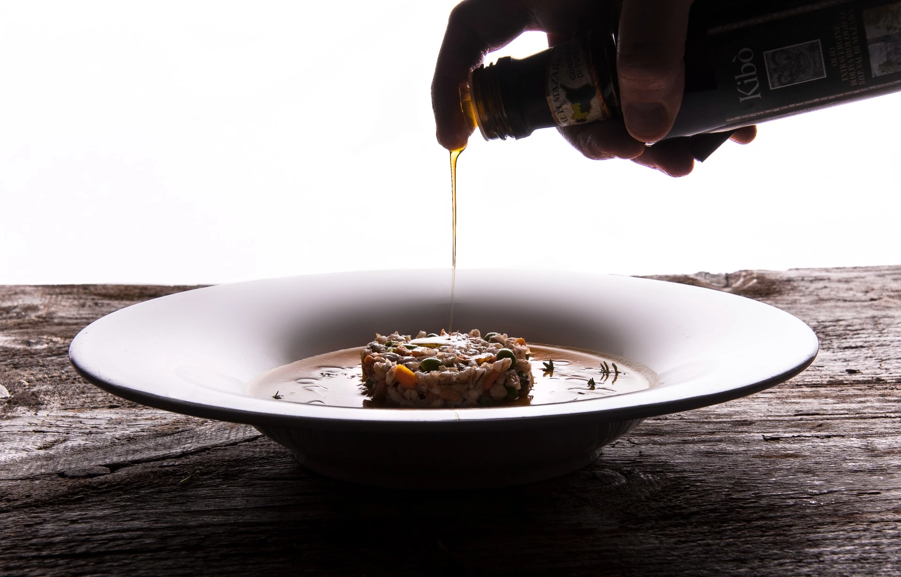
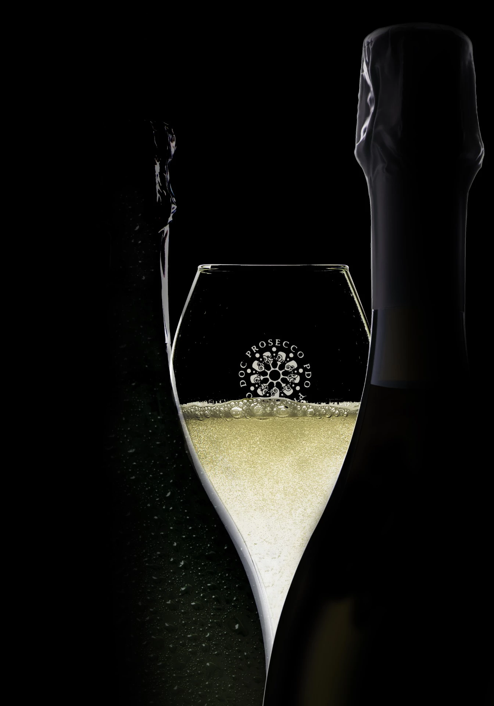
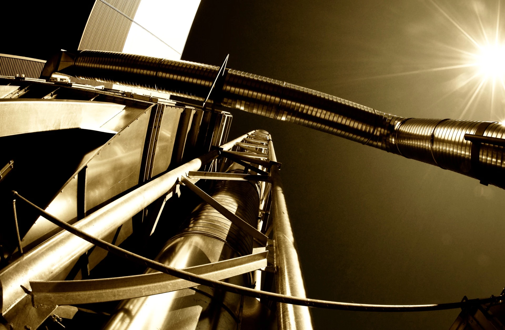
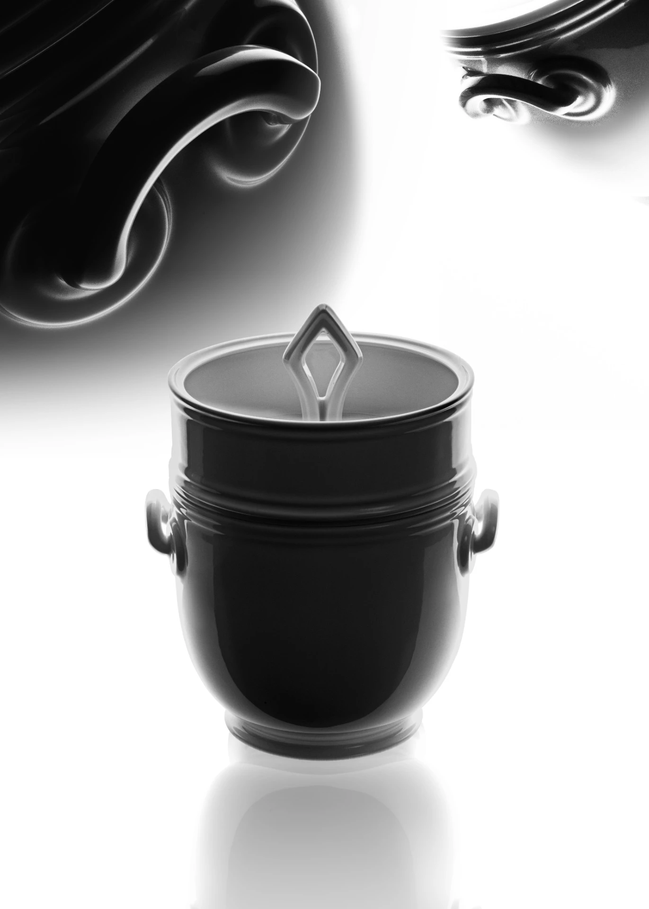
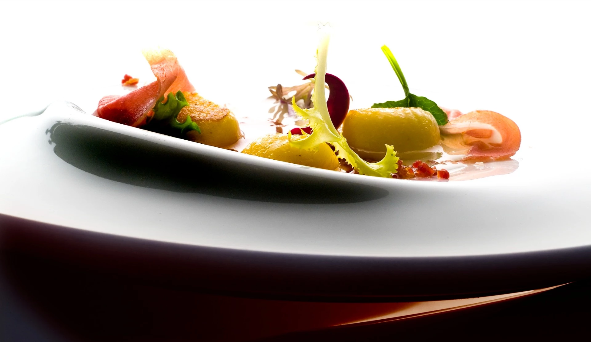
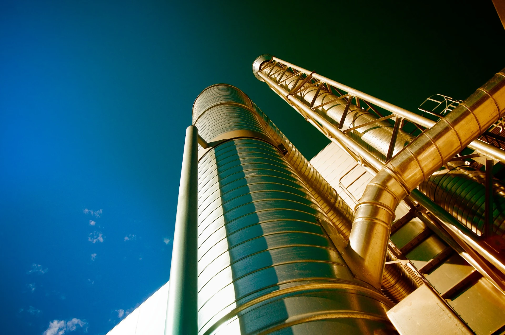
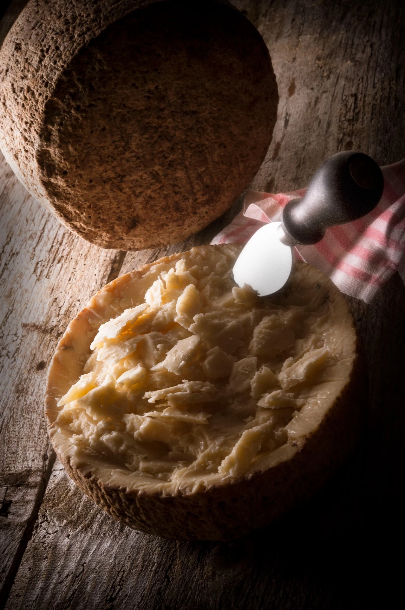
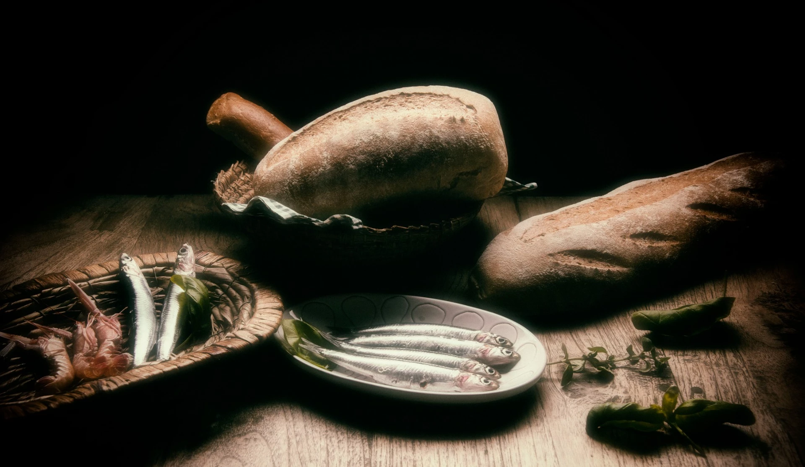
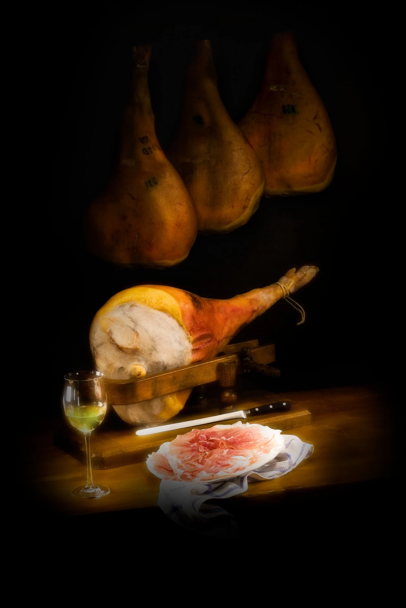
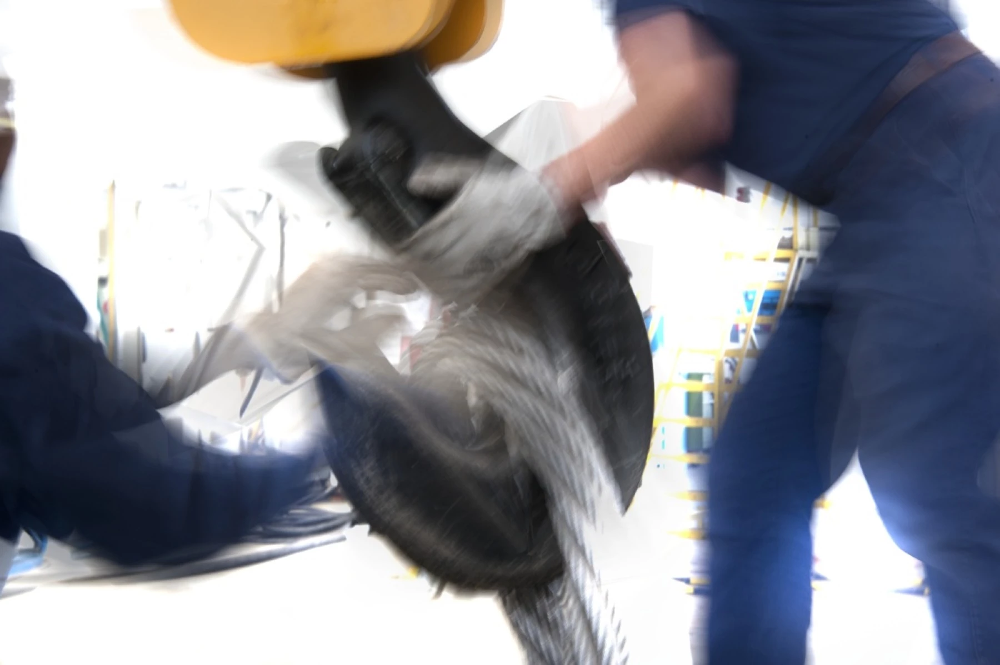

Ennio Calice
Food · Still life · Fotografia industriale
Esplora il portfolioFotografie
Un filo d’olio, il bordo di un calice, un riflesso sul metallo. La luce racconta la materia in ciascuno scatto.












Film
Quattro sequenze fotografiche, dai piatti di Food & Light ai paesaggi di Viaggi.


Ennio Calice si occupa di fotografia editoriale e pubblicitaria. Il suo lavoro spazia dal food e dallo still life alla fotografia industriale e al reportage.